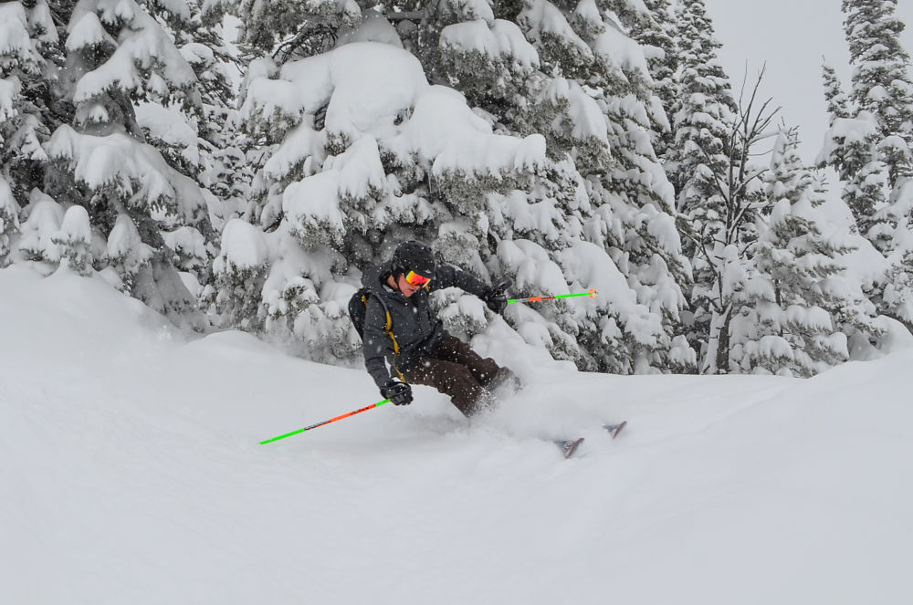
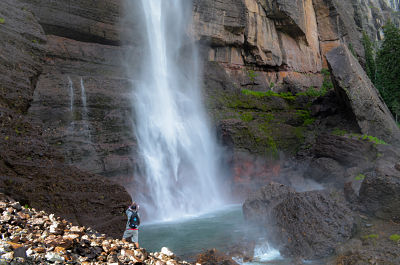
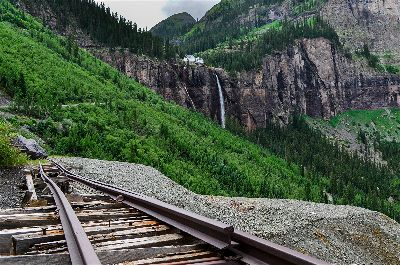
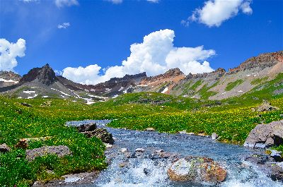
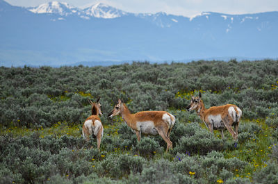
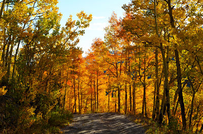
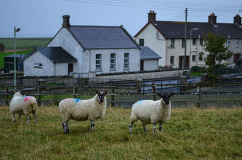

Photography








A few words
 Telluride is one of the most beautiful places in Colorado, and therefore the world. I want to live down in the San Juan mountains someday so that I can be surrounded by these landscapes all the time.
Telluride is one of the most beautiful places in Colorado, and therefore the world. I want to live down in the San Juan mountains someday so that I can be surrounded by these landscapes all the time.
Sunset above Denver from Mt. Evans. This is my favorite place to go to photograph mountain goats. The mountain goat is a wonderful animal that I have always enjoyed and it leads me on great journeys to find them as sometimes they can be quite elusive.